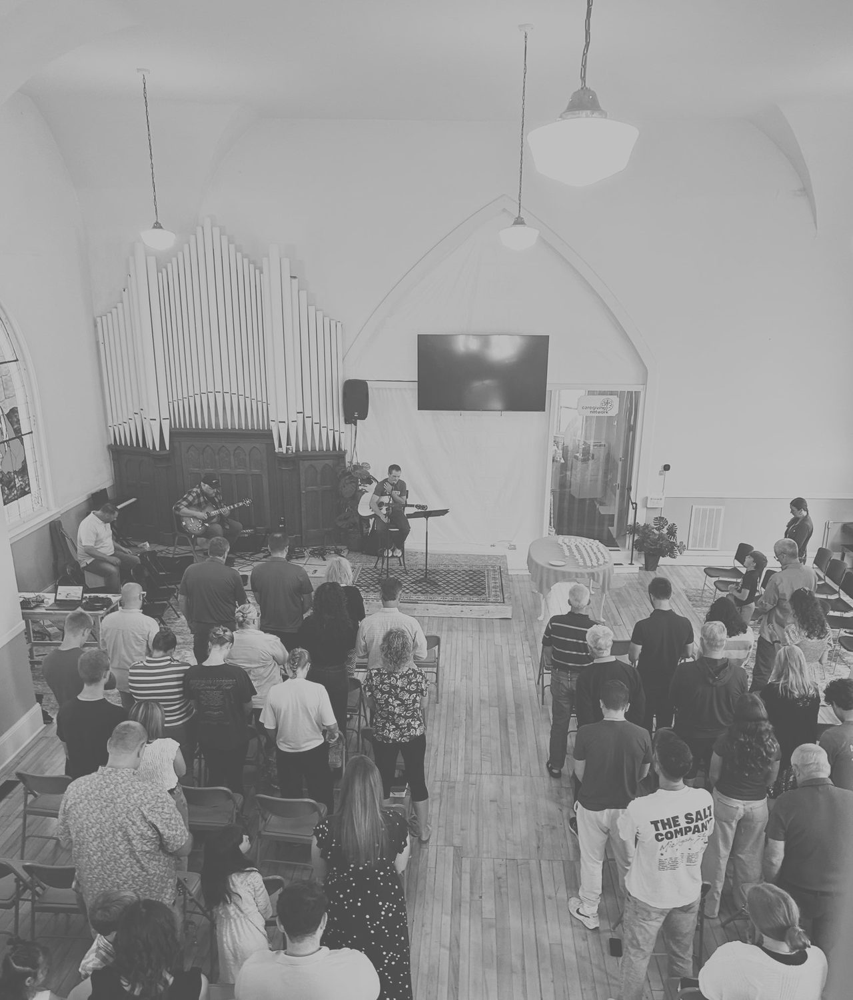
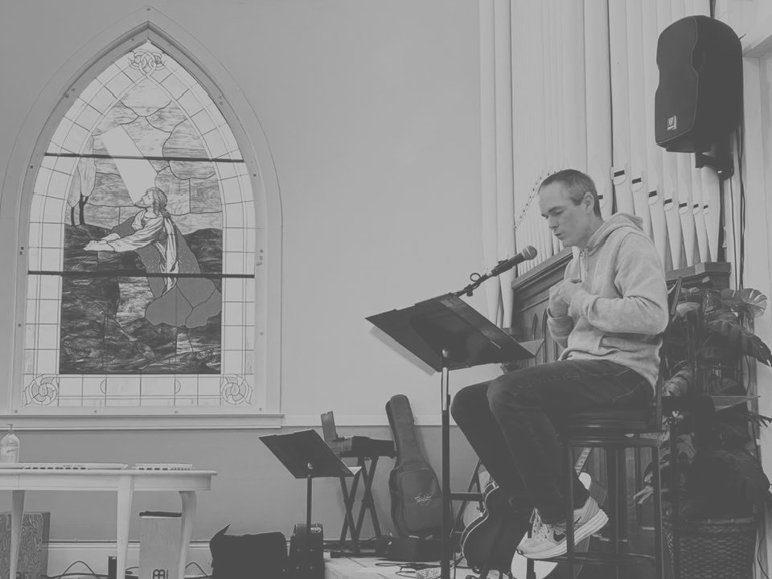

Tap to skip

For the church to grow as Christ's disciples understanding we are called according to His purpose.
That the church would grow in the love we have for Christ and the love we have for one another while fulfilling our call to be the light of Christ within our world.
We believe that the whole universe was created by God. We believe He created mankind in His image to have a deep and loving relationship with. We believe that sin has separated mankind from that relationship and that sin deserves God's judgment and punishment. But instead of His wrath, He desired to show mercy and grace because of His love for humanity.
This love was shown to us when He crushed His one and only Son, Jesus, on the cross for our sin. We believe that those who put their faith in Christ and His sacrifice are forgiven of sin, receive the Holy Spirit, and have eternal life. We know this to be certain because Jesus has risen from the dead conquering sin and death giving everlasting life to all who hope in Him. We believe He is the only way of salvation.

Doors will be open at 9:30 am for coffee and connecting with others before service.

Click to interact
Support
A PayPal option is available, and the “tip” option can be removed.
Contact